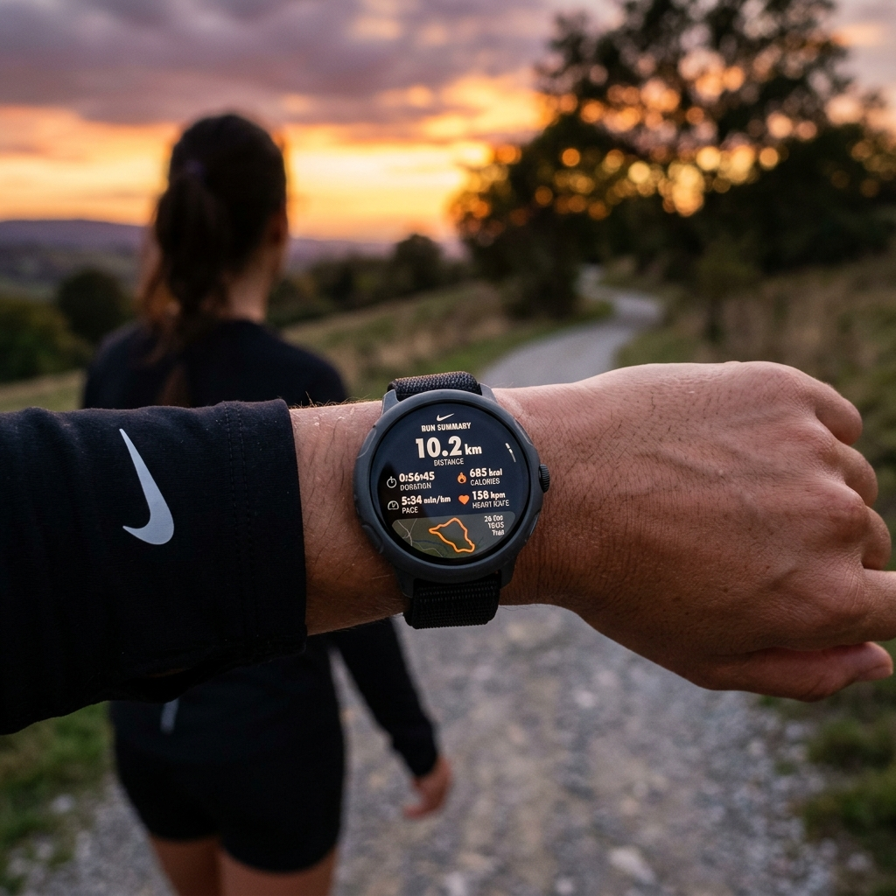

Running is one of the most popular ways to maintain physical fitness, and smartwatches have revolutionized how we track and analyze our workouts. Gone are the days when you had to strap a bulky smartphone to your arm or carry it in your hand just to record your running route and pace. With modern Wear OS smartwatches like the Samsung Galaxy Watch 6, Google Pixel Watch 2, and TicWatch Pro 5, you can run completely phone-free, relying on built-in GPS and sophisticated tracking applications.
However, the hardware is only half the equation; the software you choose determines how your metrics are presented, synced, and shared. The Google Play Store on Wear OS hosts a wide array of running apps, ranging from simple pace-trackers to advanced telemetry analyzers and social running networks. Let's dive into the best Wear OS running apps available today, highlighting their unique strengths and helper features.

Elevating Your Run with Wear OS


Using a dedicated Wear OS running app allows you to keep your eyes on the road while receiving real-time audio and haptic feedback. These apps tap into your watch's heart rate monitor, accelerometer, and GPS sensors to feed you crucial statistics like cadence, elevation, heart rate zones, and splits. By leaving your phone behind, you can enjoy a distraction-free run while retaining full confidence that your progress is being logged accurately.
Top Wear OS Running Apps Reviewed
1. Strava (The Social Network for Athletes)
Strava is the undisputed king of fitness tracking platforms. The Wear OS version is a fully standalone application, allowing you to record GPS runs, cycle rides, and hikes directly from your wrist. Its interface is clean, displaying key metrics like distance, pace, elapsed time, and heart rate during your run. Once your watch reconnects to your phone or Wi-Fi, the workout is uploaded to Strava's cloud servers, where you can analyze your performance against "Segments" (popular local routes) and share your achievements with a thriving community of athletes.
2. Nike Run Club (Guided Runs and Motivation)
If you need an extra dose of motivation, Nike Run Club (NRC) is an outstanding choice. The NRC Wear OS app is completely free and features highly polished "Guided Runs." These are audio-coached sessions led by elite athletes, running coaches, and mindfulness experts who talk you through interval trainings, recovery runs, and long-distance runs. The watch interface is bright, bold, and easy to read mid-stride, displaying distance, duration, and average pace clearly.
3. Adidas Running (Custom Training and Stats)
Formerly known as Runtastic, Adidas Running is a feature-rich fitness logger. The Wear OS app offers a smooth standalone recording interface. It allows you to select various sport types (road running, trail running, treadmill) and integrates seamlessly with Adidas' global training challenges. During a run, it records your GPS path, heart rate, and caloric burn, feeding this data directly into your personal dashboard for weekly and monthly goal tracking.
4. Ghostracer (Real-Time Ghost Pace Tracking)
For competitive runners looking to break their personal records, Ghostracer is a hidden gem. It is a highly customizable GPS tracker that lets you run against a virtual "ghost" or competitor. You can import GPX files of your previous runs or download Strava segments and see your real-time position relative to the ghost player directly on your watch screen. It supports custom data screens, allowing you to choose exactly which metrics to display.
Pro Tip: Get a Quick GPS Lock
Before hitting the "Start" button on your running app, step outside under an open sky and wait 30-60 seconds for your watch to establish a strong GPS satellite lock. Starting a run before the GPS indicator turns green can lead to missing route maps or inaccurate initial pace readings.
5. Fitbit & Google Fit (Built-in Simplicity)
If you prefer an app that requires no registration and integrates directly with your watch's default health system, the built-in tracking tools are excellent. On Pixel Watches, the integrated Fitbit app provides advanced heart rate zone tracking, active zone minutes, and detailed sleep recovery correlation. On other Wear OS devices, Google Fit offers a lightweight, reliable recording experience that syncs perfectly with the broad Google Health ecosystem.
Running App Feature Comparison
| App Name | Standalone GPS | Guided Audio Runs | Social Features | Best For |
|---|---|---|---|---|
| Strava | Yes | No | Excellent | Route segments & social sharing |
| Nike Run Club | Yes | Yes (Free) | Good | Coached guided workouts |
| Adidas Running | Yes | Yes (Premium) | Good | Structured goals & challenges |
| Ghostracer | Yes | No | Limited | Beating personal record routes |
| Fitbit / Google Fit | Yes | No | Basic | All-day health integration |
How to Optimize Your Wear OS Watch for Outdoor Runs
Running with standalone GPS and playing Bluetooth music simultaneously is the absolute most demanding task you can ask your smartwatch to do. Here are a few settings to adjust before you lace up your shoes:
- Download Music Offline: Streaming music over LTE while tracking GPS will drain your battery in under 90 minutes. Download your favorite running playlist to your watch storage via Spotify or YouTube Music and play it offline.
- Turn Off Wi-Fi: When you leave your house, your watch will waste battery searching for Wi-Fi networks. Turn off Wi-Fi in the Quick Settings menu before you start.
- Configure Touch Lock: If you are running in the rain or sweating heavily, turn on "Water Lock" or "Touch Lock" to prevent sweat drops from accidentally pausing or ending your workout.
Final Thoughts
Your Wear OS watch is an incredibly capable training tool that can push you to run faster, longer, and smarter. Whether you choose the community segment battles of Strava, the coached encouragement of Nike Run Club, or the competitive racing features of Ghostracer, there is an app in the Play Store tailored to your running style. Choose your favorite, download it today, and start tracking your progress towards your fitness goals!